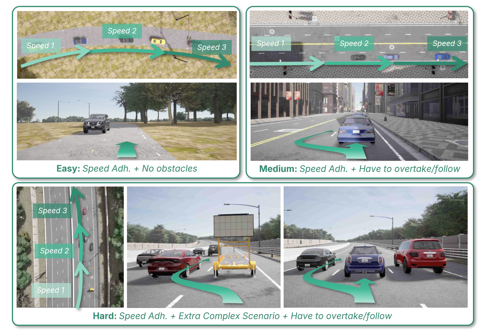
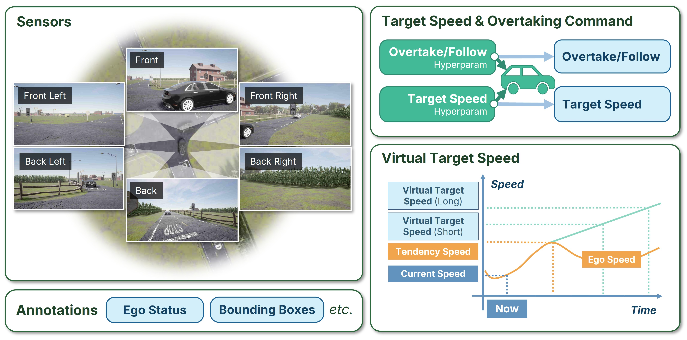
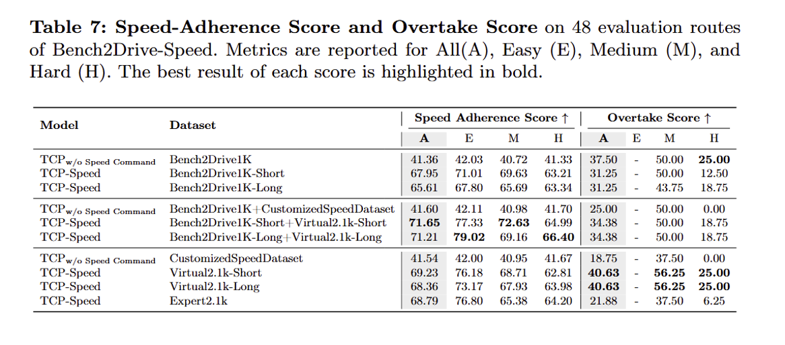
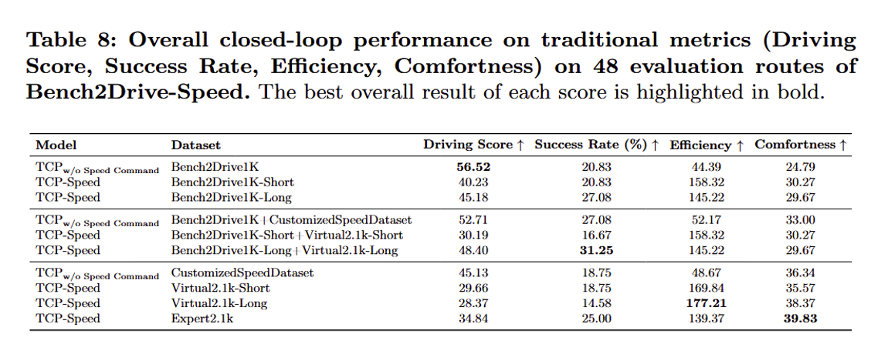

Abstract
End-to-end autonomous driving (E2E-AD) has achieved remarkable progress. However, one practical and useful function has been long overlooked: users may wish to customize the desired speed of the policy or specify whether to allow the autonomous vehicle to overtake. To bridge this gap, we present Bench2Drive-Speed, a benchmark with metrics, dataset, and baselines for desired-speed conditioned autonomous driving. We introduce explicit inputs of users' desired target-speed and overtake/follow instructions to driving policy models. We design quantitative metrics, including Speed-Adherence Score and Overtake Score, to measure how faithfully policies follow user specifications, while remaining compatible with standard autonomous driving metrics.
To enable training of speed-conditioned policies, one approach is to collect expert demonstrations that strictly follow speed requirements, an expensive and unscalable process in the real world. An alternative is to adapt existing regular driving data by treating the speed observed in future frames as the target speed for training. To investigate this, we construct CustomizedSpeedDataset, composed of 2,100 clips annotated with experts demonstrations, enabling systematic investigation of supervision strategies. Our experiments show that, under proper re-annotation, models trained on regular driving data perform comparably to on expert demonstrations, suggesting that speed supervision can be introduced without additional complex real-world data collection. Furthermore, we find that while target-speed following can be achieved without degrading regular driving performance, executing overtaking commands remains challenging due to the inherent difficulty of interactive behaviors.
Benchmark
We propose a closed-loop benchmark for desired-speed conditioned driving. It introduces explicit target speed and overtake/follow commands.
- - Quantitative controllability metrics (speed adherence, overtake score)
- - Joint evaluation of safety, comfort, and task success
- - Compatible with Bench2Drive


Dataset
We construct a dataset of 2,100 scenarios with explicit speed annotations.
- - Balanced across difficulty and behaviors
- - Includes dynamic within-route speed variation
- - Introduces virtual target speed for scalable supervision
Baselines & Findings
We evaluate speed-conditioned policies under multiple settings.
- - Models can follow target speed without harming safety
- - Overtaking remains challenging
- - Virtual target speed performs comparably to expert supervision


BibTeX
@article{bench2drive_speed,
title={Can Users Specify Driving Speed? Bench2Drive-Speed: Benchmark and Baselines for Desired-Speed Conditioned Autonomous Driving},
author={Yuqian Shao and Xiaosong Jia and Langechuan Liu and Junchi Yan},
journal={...},
year={2026}
}